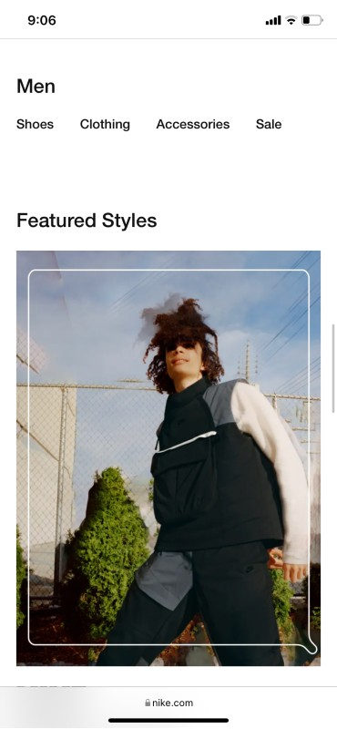

Visual Hierarchy
Apple
Apple's WebsiteAs we can see in the screenshot, the Apple's website includes a picture and a quote with big letters, which is a great usage of Visual Hierarchy. They clearly want all users to focus first on this message about transformation and then proceed to do the corresponding searches.
White Space and Clean Design
Nike
Nike's Website
The Nike's website has a lot of white spaces combined with pictures of their catalog. As we can see in the screenshot, they have their different categories,followed by a picture of their corresponding products. To me, this is a great example of not focusing on having so much text, but instead, using white space with pictures and a proper and user friendly design.
Contrast
Spotify
Spotify's WebsiteI chose spotify's website as a good example of contrast because of the way they play with the colors and textures. They are definitely innovative, yet, they adhere to contrast standards while creating a new concept for users. To me this is a great way of adding contrast to a website.